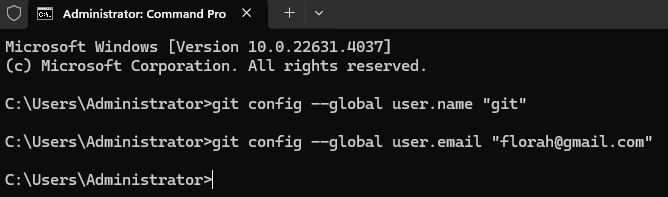
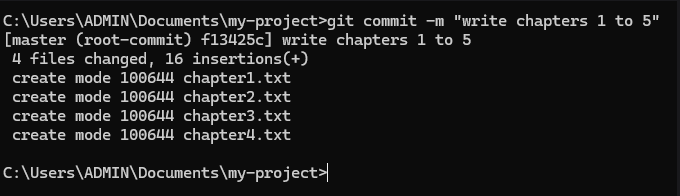

git --version

Version number returned meaning Git installed
brew install git
sudo apt install git
Welcome to Everyday Git, a simple and practical tutorial on how to use Git. Git is an essential tool for anyone involved in software development, and this blog will guide you through the basics of using Git effectively.
Git is a version control system. A version control system is a software that tracks and manages changes to files over time.
Version Control Systems allow users to revisit earlier versions of their files, compare changes between versions, undo changes and a lot more. Other version control software include:
Before diving into Git, you will need to set up your development environment. Make sure you have the necessary tools to write and execute Git commands. You will need:
To use Git, we need to first download and install it. To download Git.
download gitdownload the version for your platform whether it is macOS or Windows or Linux. Run the downloaded installer, leave all the options default during installation.
to confirm whether git was installed successfully;
git --version
Version number returned meaning Git installed
brew install git
sudo apt install git
After installing Git, you need to configure it with your name and email address, which will be associated with your commits.
folllow the following steps to configure Git:
git config --global user.name "USERNAME"Replace USERNAME with your preferred username, for example, if your username is git:
git config --global user.name "git"
git config --global user.email "EMAIL_ADDRESS"
Replace EMAIL_ADDRESS with your email address, for example, if your email address is florah@gmail.com:
git config --global user.email "florah@gmail.com"
We can verify whether the username and email are set correctly. To do so:
git config user.name
git config user.email
The command should return the email that you set during the configuration process.
Committing is the most important feature of git. A commit is a checkpoint in time, it is a snapshot of changes in your repository. The commit process involves recording snapshots of your project at various stages, allowing you to track progress, revert changes and collaborate with others efficiently. Before jumping to committing changes, which is a fundamental aspect of using Git, we need to first understand what a Git repo is.
A git repo is a workspace which tracks and manages files within a folder. Anytime we want to use Git with a project, app, et.c, we need to create a new git repository. We can have as many repos as we want on our machine all with separate history and content, however, it is important to note that a project should have a single Git repository.
To initialize a git repository
git init

use git status to confirm whether your project has a git repository or not, more about git status later. When you run the git status command and get the message "fatal: not a git repository..." being returned, then it means that the project does not have a git repository, you can go ahead and initialize one. If you get anything else back, then it means that the current directory contains a git repository, therefore no need to initialize one again.
The staging area is where you prepare changes before committing them to the repository. It allows you to review and modify the changes before making them a part of the project history.
To add files to the staging area, use the following command:
git add .
This command adds all the changes in the current directory to the staging area.
Once your files are staged, you need to commit the changes to save them in the repository.
git commit -m "Your commit message"
for example the commit message "write chapter 1 to 5"; the output will be
Good commit messages are concise yet descriptive, explaining what changes you made. You can view previous commits by running:
git log
To revert to a previous commit, use:
git checkout
We can view past commits and even travel back to these commits (more about this later). To view past commits, we use the command:
git log
Sometimes after hitting the enter button, you realise you used a wrong commit message or maybe made a typo in the commit message grammar. Git offers us a way to edit the most recent commit message. Simply run the command:
git commit --amend
Branches in Git allow you to work on different features or versions of your project without affecting the main codebase. By default, Git creates a main (or master) branch.
Using branches enables you to:
To create a new branch, use the following command:
git branch new-branch-name
This creates a branch but doesn't switch to it. To work on the new branch, you must switch to it.
o view all branches in the repository, run:
git branch
The active branch will be highlighted with an asterisk (*).
To switch to a different branch, use the following command:
git checkout branch-name
This makes the specified branch the active branch, where all new changes will be made.
Replace BRANCH_NAME with the name of the branch, for example, if we want to make chapter1 the active branch (switching to it):
git switch chapter1
Once you finish working on a branch, you may want to merge it into another branch, typically the main branch. To merge your changes, first switch to the branch you want to merge into (e.g., main), then run:
git merge branch-name
where BRANCH_NAME is the name of the branch we want to merge to the current active branch. Assuming our official branch is called 'main' and we have content in a branch called 'chapter1' that we want to merge into main:
This integrates the changes from the branch into your current branch.
git switch main
git merge chapter1
After merging a branch, you can delete it to keep your repository clean:
git branch -d branch-name
Replace BRANCH_NAME with the name of the branch you want to delete, for example, to delete the branch chapter1:
git branch -d chapter1
This deletes the branch, but your changes are still preserved in the main branch.
Now that you have learned the basics of Git, here are some next steps you could take: